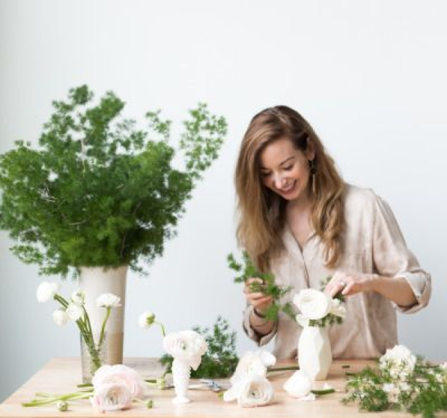

ИСТОРИЯ И ФИЛОСОФИЯ КОМПАНИИ
Наша история началась с мечты – подарить миру не просто цветы, а настоящее волшебство, способное трогать сердца и создавать незабываемые моменты. Всё началось с маленькой мастерской, где мы своими руками собирали первые букеты для друзей и близких. Каждая композиция создавалась с особой теплотой, вдохновением и желанием сделать что-то уникальное. Со временем к нам присоединилась команда талантливых флористов, разделяющих нашу любовь к искусству цветов. Мы выросли, но не изменили своей философии – создавать букеты, которые становятся посланниками чувств и несут радость.
НАША КОМАНДА
Аня
Мастер нежных и романтичных композиций, вдохновляет клиентов на выражение чувств через цветы.

Виктория
Эксперт по созданию минималистичных букетов для современных событий.
София
Специализируется на дизайнерских букетах для свадеб и торжеств.
Дарья
Профессионал в создании сезонных букетов, воплощающих атмосферу природы и времени года.
ОТЗЫВЫ НАШИХ КЛИЕНТОВ
Заказывала здесь букет для подруги, и он превзошел все ожидания! Спасибо за красоту и оперативность.
Доставленный букет стал настоящим сюрпризом для моей жены! Всё было сделано так, как я просил, и даже лучше. Благодарю за высокий уровень сервиса!
Всегда приятно работать с профессионалами, которые знают своё дело. Ваши букеты – это сочетание вкуса, свежести и настоящего творчества. Рекомендую всем!